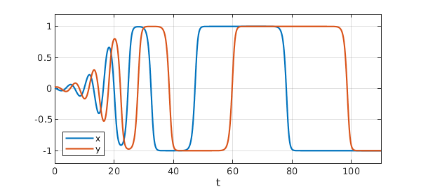

Tomas Johnson and Warwick Tucker have studied the following challenging example of a two-variable ODE system whose solutions approach a square limit cycle containing four saddle points [1]. (More properly this should be called a heteroclinic cycle or a graphic.) The system is $$ x' = (\delta x+y)(x^2-1), \quad y' = (\delta y-x)(y^2-1), $$ where $\delta $ is a parameter. Here is a solution with $\delta =-.2$ plotted in the phase plane. We compute up to $t=110$ but plot just up to $t=50$ to make the curve most attractive:
N = chebop(0,110);
N.lbc = [.01; .02];
N.op = @(t,x,y) [diff(x)+(.2*x-y)*(x^2-1); diff(y)+(.2*y+x)*(y^2-1)];
[x,y] = N\0; arrowplot(x{0,50},y{0,50})
axis(1.1*[-1 1 -1 1]), axis square off
Here is a plot of the components $x(t)$ and $y(t)$ up to $t=110$. Note how the times spend near the saddle get longer as the trajectory comes closer to them.
LO = 'location';
plot([x y]), ylim([-1.2 1.2]), grid on
xlabel t, legend({'x','y'},LO,'southwest')
set(gca,'ytick',-1:.5:1)

Let's examine more closely how close these curves come to $\pm 1$. Here is a semilogy plot of the quantities $1-|x|$ and $1-|y|$:
semilogy([1-abs(x) 1-abs(y)]), grid on
ylabel('distance to unit square')
xlabel t, legend({'x','y'},LO,'southwest')
Down to $10^{-11}$, everything looks clean, but at that point we see computational trouble. This is the level of Chebfun's tolerances for the ODE solver. In fact, if we compute further to $t=150$, one of the variables erroneously becomes bigger than $1$, whereupon it rapidly diverges.
Beyond here, one would need higher-precision arithmetic or the more careful methods developed by Tucker. One might also explore a change of variables such as $u = \tanh^{-1}x$ and $v = \tanh^{-1} y$.
A different example with a square limiting behavior can be found as Exercise 48 of Exploring ODEs [2], adapted from p. 215 of [3]. An example with three variables moving on a sphere between three saddle points can be found in [4], where crossing times are also studied.
[1] T. Johnson and W. Tucker, Automated computation of robust normal forms of planar analytic vector fields, arXiv:0810.5282, 2008.
[2] L. N. Trefethen, A. Birkisson, and T. A. Driscoll, Exploring ODEs, SIAM, 2018, freely available online at https://people.maths.ox.ac.uk/trefethen/ExplODE/.
[3] M. W. Hirsch, S. Smale, and R. L. Devaney, Differential Equations, Dynamical Systems, and an Introduction to Chaos, 3rd ed., Elsevier, 2013.
[4] L. N. Trefethen, A nonlinear system of Guckenheimer and Holmes, www.chebfun.org/ode-nonlin/GuckenheimerHolmes.html/, February 2015.